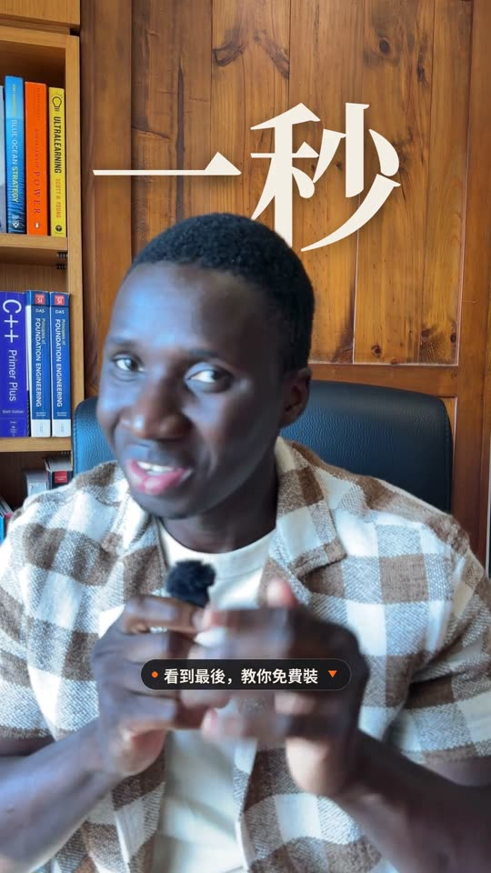
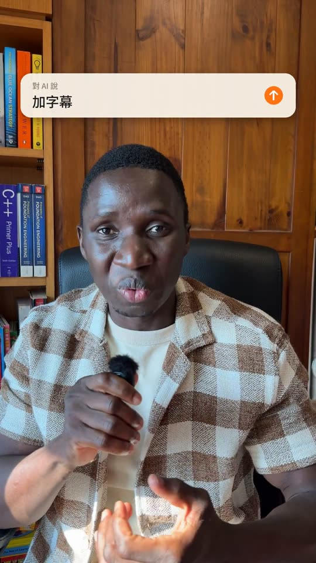
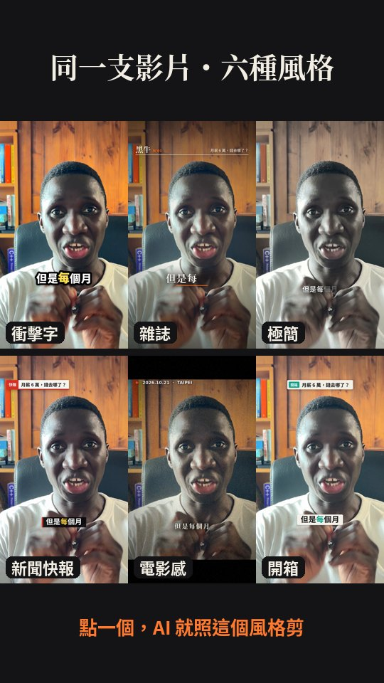
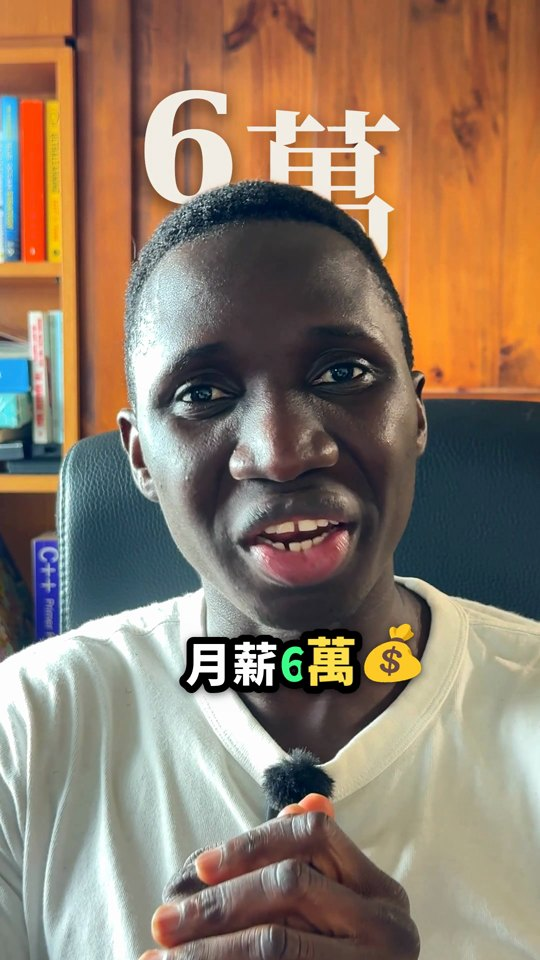
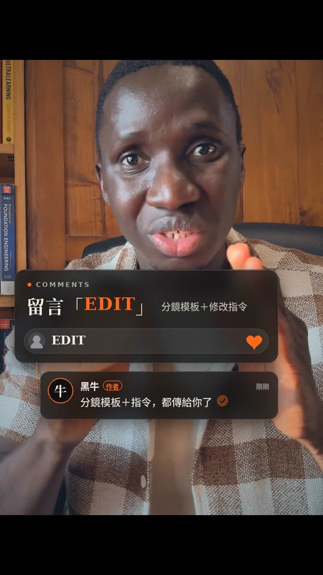

跟 AI 聊天，
剪完整支影片。
影片裡那支，我一秒都沒有自己剪。
同一套流程我整理成 Claude 技能（Skill），你也可以直接裝：丟原始素材、看分鏡、用一句話改，就拿到成品。
免費 · Claude 免費版也能裝 · 素材只在你自己的 Claude 對話裡處理
不是只有上字幕。
這些都是影片裡真的出現的畫面，技能會照同一套風格幫你做。哪個不要，一句話拿掉。





- 丟原始素材
NG、重講都留著。附上講稿更準。
- AI 先給分鏡
每一拍的畫面、字幕、轉場，下面都有留言框。
- 一句話修改
「字幕再大一點」「這句剪掉」，改到你滿意。
- 拿到成品
1080×1920，聲音和嘴型對齊，檔案不超過 30MB。
裝一次，之後每支影片都能用。
請用電腦操作（Claude 網頁版或桌面 App）。之後剪片也建議用電腦，上傳影片比較順。
- 01先打開「程式碼執行」
技能要靠它才能跑。到 Claude 左下角頭像 → Settings → Capabilities，打開 Code execution and file creation。
Settings → Capabilities公司帳號（Team / Enterprise）要請管理員在 Organization settings → Plugins & skills 打開。
- 02下載技能檔
下載 heiniu-video-editor.zip，不要解壓縮，直接用整個 zip。
heiniu-video-editor.zip ↓Mac 的 Safari 可能會自動解壓成資料夾：到「下載項目」找 .zip 檔，或改用 Chrome 下載。
- 03上傳到 Claude
左側進入 Customize，在 Skills 頁按右上角 ＋ Add → Upload skill，選剛剛的 zip，再按 Upload。
Customize → ＋ Add → Upload skill - 04確認開啟，開始用
技能清單出現 heiniu-video-editor，右邊開關是開的就完成了。開一個新對話，輸入 / 選 heiniu-video-editor，附上影片再送出，Claude 就會照這套流程剪。
Claude 官方說明 ↗
用黑牛 AI 剪輯幫我剪這支短影音。原始素材都附上了（NG 和重講也在裡面）。 我的講稿：【貼上你的講稿】 我的帳號名稱：【例如：黑牛】，結尾想請大家留言：【例如：EDIT】，留言後會拿到：【例如：完整流程】 先幫我挑最好的那幾段、給我一份分鏡確認。我說可以之後再算圖。
用 Claude Code？兩行裝好
在終端機貼上，之後有更新也會跟著收到。
claude plugin marketplace add FATTY-BAMBA/heiniu-tools claude plugin install heiniu-video-editor@heiniu-tools
開始前，你可能想問
要付費嗎？
技能免費。Claude 的免費版就能安裝技能；剪輯需要跑程式，影片越長、越多次修改，用到的額度越多，可用量以你的 Claude 方案為準。
上傳 zip 時失敗了？
最常見的三個原因：① 上傳的是解壓後的資料夾，不是 .zip；② 沒有先打開 Settings → Capabilities 裡的 Code execution and file creation；③ 自己改過 zip 裡的資料夾名稱。重新下載原本的 zip 再上傳一次就好。
裝好了，但 Claude 好像沒有用到技能？
先到 Customize → Skills 確認開關是開的，然後在對話第一句直接說「用黑牛 AI 剪輯幫我剪這支影片」。Claude 開始給你分鏡頁，就代表技能在運作。
我的素材是 4K、檔案很大，上傳不了怎麼辦？
先在手機或電腦把素材輸出成 1080p 再上傳就好，成品本來就是 1080×1920。如果你用 Claude 桌面版並連結了電腦資料夾，也可以直接讓 Claude 讀那個資料夾。
我的影片會被傳到黑牛這邊嗎？
不會。技能是一包說明和程式，在你自己的 Claude 對話裡執行，素材和成品都只在你的對話裡。
只能剪中文嗎？
中文（會轉成台灣繁體）、英文、粵語、日文、韓文都可以轉字幕。第一次使用時會自動下載語音辨識模型，如果你的環境不能下載，Claude 會請你提供一份字幕檔（.srt，剪映或手機自動字幕都能匯出）。
貼一次，就會跟黑牛的影片一模一樣嗎？
不會一模一樣。素材、講稿和你每次的修改都會影響結果。先確認分鏡、再用一句話慢慢調，通常兩三輪就會很像你要的樣子。影片裡的「台北 101 頂樓換景」是另外用 AI 影片工具做的，這個技能不包含。
加音樂呢？
建議發 IG / TikTok 時直接在 App 裡選熱門音樂，音量調到 10–15%。也可以給 Claude 一首可商用的音樂檔，它會自動在你講話時把音樂壓低。
下一支影片，讓 AI 先剪。
剪完記得到影片留言告訴我，你最常用哪一句修改。